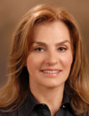

Nesrin Kartal Ozer, is Professor at Marmara University, Faculty of Medicine,
Department of Biochemistry, Istanbul,Turkey. She graduated with a BSc in
Pharmacy from Hacettepe University, Ankara, Turkey and she has received
her PhD in Biochemistry in Hacettepe University, Faculty of Medicine. She
moved then to Marmara University, Istanbul. She was a Visiting Scientist
at St.George's Hospital, Medical School, Department of Biochemistry, London,
UK (1985-1986); Institute of Biochemistry and Molecular Biology, University
of Bern, Switzerland (1993-2004) and University of Hohenheim, Stuttgart,
Germany (2008). In her research she published ~ 100 articles and she was
invited speaker at ~70 international meetings. She was the organizer ~10
scientific meetings and conferences. As member of International Organizations
it is worth mentioning her membership in the International Advisory Committee,
Oxygen Club of California (1999- today); FEBS Advanced Course Committee
Member (2003-2006); Secretary General Society for Free Radical Research-Europe
(SFRR-E) and Member of the Council (2003-2009) and President of SFRR-E
(2013-2014). In 2006 she was awarded The Oxygen Club of California Award
and “Life Time Honorary Member” (2006):“In recognition of outstanding research
contributions on the role of vitamin E in atherosclerosis and to fostering
the field of free radical biology. Her research focus on hypercholesterolemia
related changes in signal transduction pathway proteins, in particular
differently expressed proteins in age related diseases such as atherosclerosis
and Alzheimer disease. In parallel she has carried out research on the
molecular function of tocopherols in age related diseases.